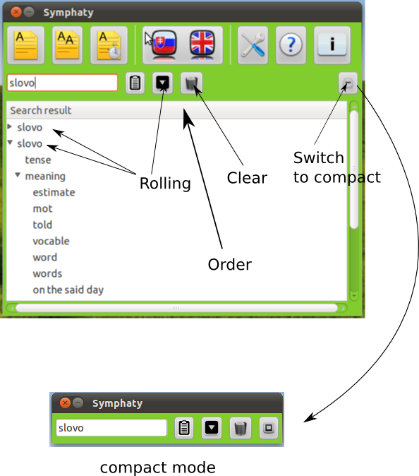

Tips
This section introduce to some tips:
Ordering words alphabetically
When we translate word output will be shown in Results.
By clicking on area marked as Order by it will order results
alphabetically asceding or descending.

Rolling of words
After translation words are outputed to results with three parts.
Sometimes it can take much space so we can push the button Rolling
and all parts will roll up.
Deleting of translation
Sometimes we don't need already translated words and it is useful
to clear these words. For that we can use Clearing button which
will delete all output from output area.
Compact mode
By clicking on compact mode button, dictionary will transform
to compact mode. This is usefull if we need to translate some
document etc...